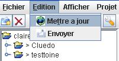
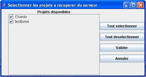
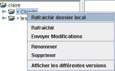

Dans le menu « Edition », choisir le menu « Mettre à jour »

Si aucun projet ou fichier n'avait été sélectionné au préalable dans l'arborescence, choisir le
ou les projets à mettre à jour.

Faire un clic droit sur le nom du projet dans l'arbre, et choisir le menu
« Rafraîchir dossier local » pour faire apparaître les fichiers au niveau de l'arborescence.

Résultat : Les projets apparaissent dans le répertoire « Project », dans un sous-répertoire du
nom de l'utilisateur, à l'endroit où l'application a été démarrée.
|